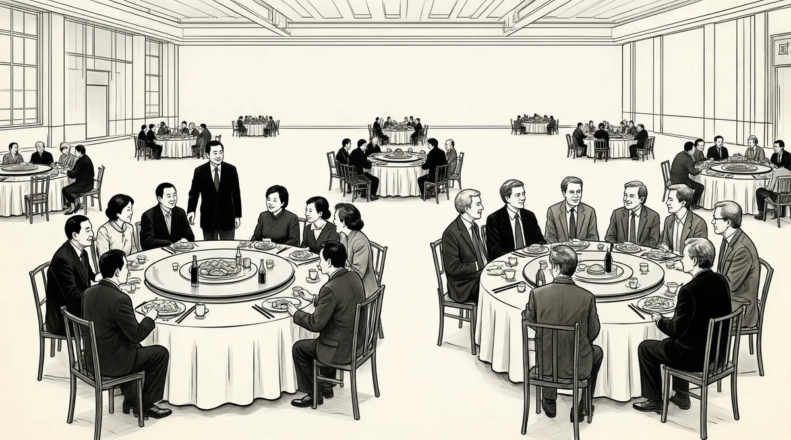

第39章 大力士

经受了1929年的股市崩盘而东山再起的人凤毛麟角，而霍华德·巴菲特就跻身其中。现在，他的儿子正在从20世纪第二次经济大崩溃中冉冉升起。1不过，世界已经改变了；现在不仅是演员，甚至连商界的人士也能成为明星。在美国媒体飞速发展的同时，巴菲特已经关闭了他的合伙公司，此时有线电视开始繁荣，报业公司即将上市，广告业仍然处在黄金时期，它们把庞大的观众群作为产品在销售。每个星期二的晚上，几乎举国上下都会坐在电视机前，观看《幸福时光》节目。
出于对媒体的天然兴趣，巴菲特也进入了媒体行业，成为一名投资人。借助1969年《福布斯》的报道以及后来《超级金钱》一书的热销，他得以声名远扬，他也开始了一种全新的、“后合伙人时代”的生活。在谨慎地利用媒体提升了自己的形象后，他也开始享受这一成果了。现在，他不仅是一位媒体投资人，更是媒体关注的对象；他一点儿也不比凯瑟琳·格雷厄姆逊色，而且她现在也十分关注他，并且认真看待他，还要把他引入美国最为重要的一份报纸的经营轨道中。
格雷厄姆像对待其他那些权威人士一样，经常向巴菲特求助，而巴菲特几乎不需要激励。
有一次，她要到纽约证券分析师协会发表演讲，我赶到了她在纽约的寓所，帮她撰写讲稿，那是一个周日的早上。她十分紧张，几近崩溃。所有那些男人们都要出席，而且她必须站在前面讲话，这使她很恐惧。在公共场合演讲对她来说一直都不是一件轻松的事情。最有意思的是，她是个极为幽默、聪明机智的人，但是一站到人群面前却会战栗不已，不知所措。尤其是，如果她知道他们要问她数字问题的时候。
正如罗伯特·雷德福所说的，格雷厄姆“出身名门，口风很紧”，不给他人一丝窥探其个人隐私的机会。他是在第一次见过她之后在一次采访中这样说的，他因拍摄关于“水门事件”的电影《惊天大阴谋》而前去拜访她。因此，雷德福自言自语道：“为什么她还要不断去演讲和接受奖赏呢？”2
格雷厄姆在联合国广场酒店的高层有一套豪华公寓，俯瞰着纽约的东河，墙上挂满了艾格尼丝·梅耶所收藏的亚洲艺术品，在这里，巴菲特和格雷厄姆开始工作。
她不断猜想他们会提出的问题，诸如新闻纸多少钱一吨，她认为这简直就是个测验。然后我说，这没什么关系。别人多少钱买，你也多少钱买，那又怎样呢？但是这确实是个大问题，她被说服了。我尽力避免让她死记那些事实。只要有个主题就行了。
格雷厄姆想说做好新闻的同时也要取得可观的利润。巴菲特听到这一想法“扑哧”笑了，重新为她定位：
你知道，好的新闻并不一定产生可观的利润，她脑子里全都是这些没用的东西，我要竭尽全力去说服她，使她相信自己比所有那些坐在那里的愚蠢男人聪明，正是这一点从一开始把我们拉在了一起。
巴菲特成了凯瑟琳·格雷厄姆的私人戴尔·卡内基训练师，他的建议使她反败为胜，扭转局势。他和其他所有人一样，都会同情那些在人群面前不知所措、战栗不已的人。再者，由于苏珊多年来的精心指导，他已经学会了更微妙的为人处世方式。他知道如何预见他们的反应，并且以非胁迫性的方式表达出来。他以前的信总是语言拘谨，现在用词恰当熟练，巧妙而富有感染力。他已经学会了倾听，学会了对别人表现出兴趣，还能同其他人谈论股票之外的事情。这都帮他赢得了格雷厄姆的青睐。
在一切准备就绪并且进行彩排之后，格雷厄姆说她当天晚上要去詹尼·阿涅利家参加晚会。“你会发现这很有趣，”她说，“为什么不和我一起去呢？”巴菲特一直强调说他在这些盛大的场合感觉十分不舒服，并且称他对这些活动一点儿也提不起兴趣。不过，这次他没有拒绝格雷厄姆，而是同意和她一起去。那天晚上，他离开房间，开车接上格雷厄姆，然后一同前往晚会。
我们真是很不合适的一对儿——她55岁，而我则40岁出头，我们一进入这座公寓——这不仅仅是一座公寓，更像一座三层的豪宅，十分巨大——每个人都向凯瑟琳鞠躬致敬，跟她套近乎，简直就是电影《甜蜜生活》中舞会场景的再现。我是跑龙套的角色，像棵盆栽植物一样杵在那里。如果你以慢镜头的方式放映，你就能看得清清楚楚。詹尼·阿涅利，菲亚特的总裁，以及他的妻子马雷拉都没有来。这几乎像一场化装舞会，但事实上它不是。
在见识了一个全新的格雷厄姆之后，巴菲特回到了奥马哈。他继续从个人的角度不断地加深对她的认识，他总是看到她自相矛盾的一面——“恐惧而又任性，高贵而又民主，常常被她最为关心的人所伤害”。他感觉很奇怪，在她的丈夫自杀10年之后，她还在不断谈起他。
当你第一次见她时，她常常会不由自主地谈起菲利普的事，就像查理一样，很快就会就一个话题说一通。而且她说起他时，所用的词语你几乎都不敢相信，要知道他曾经对她十分恶劣。不过，在我更深入地了解她之后，她告诉了我关于他以及他们之间的所有事情。她已经发现，她不可能与他在同一层面上对话。她感觉自己是个骗子，甚至是在假装同他住在同一屋檐下。他们常常和肯尼迪夫妇聚会，而她常常感觉自己不应该出现在那里。那时，他所说的任何话都很有趣，所做的任何事都很正确。当他要从她面前夺走孩子们时，她甚至都没法阻止他——我是说，整个事情她都没法阻止。
格雷厄姆从小受到母亲残暴、冷淡的对待，长大后又遭受躁狂症丈夫多年的折磨，这对她造成了很大的后遗症，而巴菲特的成长背景与她类似，这种同病相怜好像暗示了他们未来会有不同寻常的关系。他知道如何对待她才能使她感觉不到威胁。1974年春天时，她开始向他寻求建议，并且逐渐冷淡了原来的那些人。反过来，他也抓住这个机会，一举成为《华盛顿邮报》首席执行官的业务指导，好像他一生都在等待着主演《卖花女》，去调教自己的那个伊莉莎·多莉特。他比亨利·希金斯更有耐心，他慢慢地训练她，督促她和她的儿子唐读一些有益而有趣的文章。
随着巴菲特的影响逐渐增强，格雷厄姆注意到“沃伦说”这个词使董事会的一些成员感觉不舒服。3不过，巴菲特一直希望能够受邀加入董事会。当汤姆·墨菲提议请巴菲特加入大都会传媒公司的董事会时，他断然拒绝了，他正在等《华盛顿邮报》的邀请。4墨菲忠实地向格雷厄姆传达了这一信息，她“感觉自己太笨了”，竟然都没有想到这一点。5
苏珊认为她的丈夫不能再承担更多的商业责任了，他应该把他们的股票卖出去一部分，把钱用在更崇高的事业上。当他们俩在华盛顿坐出租车时，她谈到了慈善家斯图尔德·莫特，他掌管着斯图尔德·莫特慈善信托基金会，为和平、裁军、人口和计划生育事业做出了巨大的贡献。巴菲特夫妇现在比莫特富有得多，他起家时只有2500万美元。“你为什么不退休呢？”苏珊说，“斯图尔德·莫特现在就从事着这些事业，每天都不用去工作。”但沃伦是不可能退休的。他坚信自己的眼光——现在的5000万美元将来有一天能够升值到5亿美元。尽管如此，他并没有完全从家庭生活中脱离出来，也没有对妻子的话置之不理。通过与苏珊的交流，他感觉到了她希望从生活中获取更多的东西。随着彼得升入高中，沃伦对她说：“苏珊，想象一下你是一个工作了23年之后又丢掉饭碗的人，现在你打算做什么呢？”
她的回答是唱歌。她的侄子比利·罗杰斯已经给她准备了一些吉他录音带，可以把她的歌声录下来，然后欣赏。罗杰斯曾经在奥马哈的蛤蟆先生乐队、面条厂乐队和其他的俱乐部演奏爵士吉他。在他的引荐下，苏珊很快就常常出现在当地的音乐会上。不过，当她第一次登台表演时，“我恐惧极了，真的恐惧，”她说，“我真是糟透了”。她前一次公开登台演出是在10年前，那是中心高中的一场慈善义演。因此，她开始练习，并且学习当代的爱情歌曲和民谣。苏珊作为歌手首次登台出场是在那年的7月，当时是在翡翠湾的私人聚会上，观众都是一些老朋友。“他们似乎非常喜欢。”她说。6当她丈夫的朋友对她的才能大加赞扬时，她看到他十分兴奋。
虽然巴菲特夫妇那年夏天是在翡翠湾度过的，但是沃伦仍然邀请格雷厄姆来他家做客，当时她正好到洛杉矶参加分析师大会。巴菲特预感到她可能会谈到让他加入《华盛顿邮报》董事会的事宜，便提前几天回到了基威特大厦的办公室，既高兴又兴奋，就像圣诞前夜的小孩子一样。7
巴菲特在翡翠湾的别墅与一条陡峭的车道相连，离海滩不远，有点儿让人感觉不像是自己的家，而像是出租的房屋，缺少家庭的温馨。沃伦不知道这里会给格雷厄姆留下什么样的印象，毕竟她有好几座装修精致、无可挑剔的豪华别墅，并且在格伦韦尔比有个农场，在马撒葡萄园还有座海景豪宅。
不管怎样，很显然他向他的妻子反复强调，他们要尽最大的努力使格雷厄姆满意。在格雷厄姆抵达后的第一个早上，苏珊破天荒地起了个大早，像模像样地做起了家务：她为三人做了一顿丰盛的早餐，巴菲特夫妇二人都假装这是他们的惯常生活。接下来，她的丈夫就整天围着格雷厄姆转，同她谈论报纸、新闻、政治，提及每一个能使她邀请他进入董事会的机会。
有时，他会放下报纸，穿上一件为格雷厄姆这次拜访而特别购买的游泳衣，以及一把崭新的遮阳伞，同她一起离开屋子，沿着一条陡峭的小路，走到大概100码远的海边，和家人一起享受海滨之乐。对于大海，他之前一直是这样认为的：“我认为住在海边确实是个诱人的享受，晚上听着海浪的声音很有趣，诸如此类的事情吧。但是要真的在海里游泳玩乐——我感觉，还是等到年老以后再说吧。”但是现在，在岸边的沙滩坐了一会儿后，看着清澈的海水，他也勇敢地迈入了太平洋中。据说，当苏珊和巴菲特的孩子们看到这奇怪的一幕，“全都笑得人仰马翻”。
苏珊对这位不同寻常的客人有什么想法，我们还不知道。但是沃伦对此的解释却有迹可循。“一切都是为了凯瑟琳，”他说，“都是为了她。”
在星期日的早晨，他们放弃了这种客套虚礼，苏珊在半睡半醒中给格雷厄姆做了熏肉和鸡蛋，而自己却什么也没有吃，沃伦坐在旁边，用勺子从一个瓶里挖出阿华田巧克力粉。8早饭后，他和格雷厄姆又开始促膝谈心。有时候，格雷厄姆会告诉他，她想让他进入董事会，不过要等待恰当的时机。她知道，有些董事会成员，如安德鲁·梅耶可能不欢迎巴菲特加入董事会。接着他问，“什么时候才是恰当的时机呢？”，迫使她下定决心。因此，他们很快达成决议，同意巴菲特加入《华盛顿邮报》的董事会，他喜出望外。
那天下午，巴菲特离开翡翠湾，亲自开车送格雷厄姆去洛杉矶机场。“在去机场的路上，突然间，她看着我，那眼神就像一个3岁的小孩子一样。她的声音也变了，她说，基本上就像在祈求一样，‘要对我好一点儿，不要伤害我。’我后来才明白，菲利普以及报社的有些人，为了实现自己的目的或者仅仅是出于乐趣，会不断打击她，只是为了看着她崩溃。就菲利普而言，这是残酷的习惯，而其他人则是为了操控她。这样做非常容易，因为她还是很容易上当的。”
1974年9月11日，巴菲特正式加入了《华盛顿邮报》的董事会，摇身一变,从一个奥马哈的明星投资经理人，成为世界上最重要的一家媒体公司的正式顾问。尽管刚刚加入该公司董事会，他仍然能够看见格雷厄姆习惯性地向其他的董事们祈求帮助。巴菲特认为不应该这样做，作为一名首席执行官，她不能把自己放在这样的位置上。但是，他还不是非常了解她，因此，他也不好说什么。相反，他却告诫自己，《华盛顿邮报》的董事会里到处都是达官显贵和知名人士，因而他要小心翼翼地同这些人周旋。他们有权有势，还善于玩弄手段，常常习惯于控制格雷厄姆。他在董事会上一直沉默不语，不过，他却在幕后悄悄地发挥作用。
此时，巴菲特所关注的远远不止凯瑟琳·格雷厄姆和《华盛顿邮报》。1974年的市场仍然在失败的阵痛中煎熬，投资者所期盼的复苏仍旧没有出现。养老基金的经理人们已经把股票的投资削减了80%。伯克希尔的投资组合好像是被修剪过的树篱一样，在第二次大萧条中几乎被斩去1/3。在20世纪已经过去的时间里，这种情况仅仅出现过几次。
在巴菲特解散合伙公司之后，芒格仍然对他的合伙人关系保持开放。同股票市场相比，他的表现在两个方面都更不稳定。在过去的几年中，尽管回报很一般，他还勉强过得去。但是到了1974年，芒格发现自己陷入了困境之中，他的合伙人损失了将近一半的资金。9就像半个世纪前的本杰明·格雷厄姆一样，他感觉有责任把这些损失的钱再赚回来。
“如果你是一台装配完美的机器，你就会像沃伦和我一样具有信托基因，”他说，“并且如果你已经告诉了人们，‘我认为我能给你创造非凡的业绩’，那么你就会很后悔没能实现他们的期望。”
至于他自己，“当然资金的价值也缩水了，我也不喜欢这样，但是想一想我们只能有这么多的时间——最后无论我赚了多少钱或者赔了多少钱，又有什么意义呢？唯一让我感觉不安的是，我知道这对合伙人们确实打击很大。这要把我给愁死了——毕竟我的工作就是替人们理财啊。”10
芒格仍然大概有28名有限责任合伙人，包括一些家族信托。为了赚回损失的一半资金，他必须让剩余的股份增加一倍多。能否实现这一目标，蓝筹印花公司的股票将起到至关重要的作用。
比尔·鲁安的红杉基金也陷入了困境，它由巴菲特原来合伙人的5000万美元起家，大量地将资金投资到一些低价股上，如汤姆·墨菲的大都会传媒公司，这些股票同几年前那些迷人的电视和电子类股票不一样，当时资金经理们挤破头去买。他们同时迅速行动，直奔主题，投入了“漂亮50股”的怀抱，它们是由世界上少数最知名大公司的股票组合而成的。11
“在这一行，”鲁安说，“有创新者、模仿者，还有成群的盲从者。”现在模仿者和盲从者成了主流，鲁安和他的合伙人里克·切尼夫在1970年购买的股票价值已经拦腰减半了。更为糟糕的是，他们刚刚在纽约股票交易所买到了一个席位，而股价马上就要从悬崖上掉下去了。12很明显，红杉基金的上市时间太不合适了——鲁安决定的上市时间正好是巴菲特认为缺乏机会而打算偃旗息鼓的时候。红杉基金的业绩每年都跑在了大盘后面——累积起来，数量还是很惊人的。13红杉基金在1973年的表现更差：它的损失高达25%，而市场平均行情是15%的损失。到了1974年，它的业绩更加糟糕。鲁安最大的投资人——鲍勃·马洛特怒火冲天。他常常因一些微不足道的亏损就打电话抱怨，在鲁安和切尼夫的公司里，人们都戏称他为一只“破坏球”。现在，他痛骂鲁安，指责他在股票市场的业绩太差，并且反复不断地斥责他，导致鲁安害怕他会把资金从公司抽走。14不过，巴菲特对此十分镇静，因为他知道市场对股票价格的反应在任何时候都不能代表它的内在价值。他了解鲁安及其合伙人所购买的股票，因此对他们的决定很有信心。
正是因为那些工作人员的高傲自大，1969年巴菲特与格雷厄姆的追随者在殖民地俱乐部的聚会，确切地说，即便不是一种推进剂，至少也为充满挑战的市场创造了相互支持的氛围。从那以后，巴菲特把它命名为“格雷厄姆集团”；埃德·安德森已经在威廉斯堡举行了第三次年会；查理·芒格在加州的卡梅尔举行了第四次年会。1971年，巴菲特把这个会议固定为两年一次。出于忠诚，他让鲁安邀请了马洛特——这种机会一般不会随便给人——和他的妻子艾比成为1973年太阳谷年会的新成员，这次是由里克·格林主办的。
马洛特可能是被这个活动打动了，决定继续支持鲁安的工作，尽管他依然不断地抱怨，使得鲁安仍然害怕他突然撤资。然而，到1974年年底时，市场行情下跌了25%以上，不过，红杉基金至少要比市场的损失少一些。
尽管如此，红杉基金的累计行情依然很糟糕，以至于曾经在那里工作过的亨利·勃兰特和卡罗尔的丈夫约翰·卢米斯，现在也都害怕行情继续恶化，害怕自己被从一艘即将沉没的船上抛下去。15
在当年的11月，《福布斯》杂志刊登了一篇对巴菲特的采访，开篇就提出了一个尖锐的问题：你怎么看待当前的市场行情？“像一个性欲旺盛的男人闯进了女儿国，”巴菲特这样回答，“现在正是投资的绝佳时机。”16他接着说：“这是有史以来第一次你能够以本杰明·格雷厄姆所青睐的‘烟蒂’型股票的价格购买菲利普·费希尔的股票。”他认为这是他所要表达的最为重要的意见，但是《福布斯》没有刊登出来；因为普通的读者不会理解为什么要引用费希尔和格雷厄姆。17当《福布斯》的记者问他对特定股票的看法时，他没有提及他正在买或者已经买了哪些，相反，他开始玩儿起小把戏，想测一测这个记者是否研究过《福布斯》杂志以前刊登的关于他的文章，看看对方对他了解多少。“一家自来水公司”，他说，并补充说蓝筹印花公司持有圣何塞自来水公司5%的股份。这位记者上当了，他没有参考以前的相关报道，还以为自己得到了内幕消息，直接就用在了这篇文章中。
不过，尽管到1974年为止，他一直对市场很热心，但是在投资时他还是很谨慎，一点点地买进，大部分的资金都花在了斯图德贝克·沃辛顿公司、汉迪–哈曼集团、哈特·汉克斯报业集团以及多媒体公司等等，并且巩固了他在信义房产公司的地位。他把其他的一些股份也增加了10%或者20%。他还从里克·格林手中购买了蓝筹印花公司的10万股股票。“他以5美元的价格卖给了我，因为他手头拮据，”巴菲特说，“那真是一个残酷无情的时期。”
巴菲特对“女儿国”的见解有双重含义：尽管这确实是最佳的投资时机，但是对巴菲特来说，在很大程度上，只能“看”而不能“摸”。国民赔偿公司的一个航空经纪人几近疯狂地赔钱贱卖航空保险保单。公司撤销了该代理机构的特权，并且竭力阻止其疯狂举动，但是几个月过去了，还是没法关闭该机构。18
财务记录混乱不堪，损失也不清楚。国民赔偿公司不知道全部的账单会达到多少，不过按最坏估计可能会高达数千万美元。然而他们仍然有希望不损失那么多，因为国民赔偿公司并不值数千万美元，想到这些，巴菲特浑身直冒汗。19
1975年年初，他的麻烦接踵而至。查克·里克肖塞尔，芒格律师事务所的合伙人——现在该事务所已经重新改名为“芒格–托尔斯–里克肖塞尔律师事务所”——给巴菲特和芒格打电话，告诉他们美国证券交易委员会正在考虑起诉他们，控告他们违犯了《证券法》。一个看似正在酝酿之中的问题，现在突然爆发为全面的危机。
里克肖塞尔在收购喜诗公司时就开始为巴菲特和芒格打理法律事务。不久之前，他还在为维持现状或维护旧制度而努力战斗，就在那时候一位在美国证券交易委员会工作的律师给他打电话，说他遇到麻烦了。里克肖塞尔本以为这件事只是例行公事，因此把这个人推荐给了维恩·麦肯齐，伯克希尔的财务主管。
正在内布拉斯加工作的维恩·麦肯齐听到电话响，他接起电话，却发现电话那头是让业内人士闻风丧胆的“强悍警察”——美国证券交易委员会执法处的头头斯坦利·斯波金。斯波金的眼袋下垂，好像整个晚上都在台灯下伏案工作，秘密起草针对大公司的诉讼，许多大公司都对美国证券交易委员会的裁决——而不是上法庭感觉不寒而栗。20在电话中，他质问了麦肯齐许多问题，涉及韦斯科金融公司、蓝筹印花公司以及伯克希尔等公司。虽然他的语气很不友好，但是这一次，麦肯齐还认为这仅仅是他一贯的做法。另一方面，麦肯齐还得到这样一种印象——斯波金认为任何富人都肯定干过坏事。21
当里克肖塞尔听说给麦肯齐打电话的不是一个普通的律师，而是斯波金本人，并且被他长时间拷问后，里克肖塞尔的心脏几乎快要受不了了。斯波金的成功率很高，因而这个下颚宽厚的人自然就成了美国商界最为显赫的人物之一。从某种意义上说，他甚至比他的老板——美国证券交易委员会主席的权力更大。
是什么引起了美国证券交易委员会的注意呢？似乎是因为巴菲特和芒格这两年来一直在酝酿的一个举动——他们精心策划想理顺他们所拥有的几家公司纠缠不清的关系。第一步是要把不太重要的多元零售公司合并到伯克希尔–哈撒韦。到1973年时，多元零售公司只不过成了一个购买伯克希尔和蓝筹印花公司股票的中介。不过，他们需要美国证券交易委员会的同意，而美国证券交易委员会推迟了多元零售公司的并购申请。芒格曾经告诉巴菲特这没有什么大不了的，他指示里克肖塞尔去“邀请美国证券交易委员会中任何有疑问的人”直接把电话打给芒格本人”，“如果这能够促进他完成工作，澄清我们的申请文件”。22
相反，在接下来的18个月中，美国证券交易委员会的工作人员似乎一直在调查蓝筹印花公司和其他一些投资活动。最后，它得出结论，巴菲特和芒格故意破坏了韦斯科金融公司与圣巴巴拉的合并交易，他们采用的方式是通过为其中的1/4股份支付较高的价格，从而达到控制其他股份的目的。至少，圣巴巴拉方面肯定是这么认为的，因为很明显是它把蓝筹印花公司告到美国证券交易委员会的。23
他们第一次意识到蓝筹印花公司陷入了麻烦之中。24巴菲特刚刚享受了加入《华盛顿邮报》董事会的荣耀，他和芒格就需要立即去寻求法律支持，因为危险在迅速增大。里克肖塞尔已经知道同巴菲特工作是怎么回事了，现在又一次向同事解释说“太阳很美好，很温暖，但是你却不想离它太近”。25在接下来的几年里，他都是在验证他所谓的“热力学法则”。
在1975年2月，美国证券交易委员会签发了传票，开始对蓝筹印花公司购买韦斯科金融公司的活动进行全面调查，并撰写了调查报告《关于蓝筹印花公司和伯克希尔–哈撒韦的说明，沃伦·巴菲特，HO–784》，该委员会的工作人员认为，巴菲特和芒格有商业欺诈行为：“蓝筹印花公司和伯克希尔，以及巴菲特，独自或者伙同其他人一起……有可能直接或者间接地涉及商业欺诈行为、计划或者预谋，或是提供的陈述材料有不实或者遗漏……”
该委员会的律师盯着一点不放——他们认为蓝筹印花公司从一开始就计划接管韦斯科金融公司，但是却没有透露这一事实；蓝筹印花公司在圣巴巴拉公司并购失败之后购买韦斯科金融公司的股票，肯定是“股权收购”，但是这次收购从来没有在美国证券交易委员会登记过。26后面一点更严重，因为这暗示美国证券交易委员会可能会大张旗鼓地公开以“民事欺诈”为由提起诉讼，不仅仅针对蓝筹印花公司，更是针对巴菲特和芒格本人。
在针对一个目标采取行动时，斯波金总是有两种选择：提起公诉或者和解。和解是给对方一个道歉的机会，而不用正式承认有罪；调查对象可以不接受也不拒绝关于欺诈的控告，但是他们可以同意接受惩罚。在接受和解时，美国证券交易委员会也有两种选择，它可以指明具体牵涉到的个人，也可以只是和公司本身达成协议，而不用指明任何个人。在和解中指出某个人的名字虽然并不意味着其职业生涯的终结，但是以后恐怕也不会再有所突破了。巴菲特通过《超级金钱》和《福布斯》以及进入《华盛顿邮报》董事会获得了极高的地位和荣誉，现在又要开始小心谨慎地战斗，以拯救自己的声誉。
然而，调查继续扩大。接到传票后，巴菲特必须开放他的档案文件——很显然，这包括他收藏的大量详尽的文件，它们同他收藏的其他东西一样庞大而又完整。由于违反了他的个人隐私，来自芒格–托尔斯–里克肖塞尔律师事务所的律师们对此进行了筛选，归类为交易单据、近期购买股票的信息、给银行的备忘录、给喜诗公司的信、给维恩·麦肯齐的便条等，然后把它们运送到了华盛顿特区的检察官们那里。巴菲特感觉自己受到了迫害，他和芒格好像在做噩梦一样，正在被一个巨大的、行动笨拙的巨人穷追不舍。为了生存，他们必须比它跑得更快些。
信件在芒格–托尔斯–里克肖塞尔律师事务所和美国证券交易委员会之间飞来飞去，就像踢毽子一样。巴菲特表面上依然保持镇静，但是他背上的病痛也开始折磨他。而芒格却没有隐藏他的焦躁和不安。
到1975年3月，调查工作进展到了新的阶段，相关证人需要到美国证券交易委员会接受询问。贝蒂·彼得斯被传唤。“你的律师来了吗？”他们问道。“没有，我还需要律师吗？”她反问道。“哦，每个人来时都会带着律师的。”他们告诉她。“难道你们不想知道发生了什么事吗？”她问道。在没有律师陪同的情况下，他们询问了彼得斯。
接着是芒格。连续两天询问——也没有律师作陪，对于查理·芒格，难道还需要什么额外的法律顾问吗？他竭尽全力为蓝筹印花公司辩护，反驳他们关于破坏圣巴巴拉并购活动的控告，并解释蓝筹印花公司为什么要支付溢价来购买韦斯科金融公司的股票。是的，他承认蓝筹印花公司曾经考虑过取得控股权，但是那些计划都仅仅是“模糊的，不确定的”，直到圣巴巴拉的并购活动以失败告终才浮现出来。这一辩论明确了他和巴菲特的作用——他们说服了文森蒂，并且他们承认诱导了贝蒂·彼得斯和卡斯珀家族进行投票。芒格满怀遗憾地打断了美国证券交易委员会律师拉里·塞德曼的讲话。“我们希望能够对路易斯·文森蒂和贝蒂·彼得斯保持公平。”他说。27但是美国证券交易委员会的律师从来都没有见过桀骜不驯的路易斯·文森蒂，他们不可能理解这一点的。“那你们蓝筹印花公司的股东该怎么办呢？”塞德曼接着问道。塞德曼不明白为什么蓝筹印花公司要对韦斯科金融公司的股东这么慷慨——那时韦斯科金融公司的股票大部分都在套利者的手中。
这些购买韦斯科金融公司股票的人知道，一旦交易结束，它的价格就会涨到圣巴巴拉公司所出的价格之上。他们为了减少风险，而采取两面下注的方式，减持了圣巴巴拉公司的股票，这同格雷厄姆和纽曼的做法一样，他们曾经购买了洛克伍德的股票来交换可可豆的仓库收据。但是，当韦斯科金融公司的交易失败后，和可可豆一样，价格迅速暴跌。28为什么要提高股价，帮助这些套利者解套呢？
芒格找到了他终极武器——本杰明·富兰克林。“对于那些要求我们矫枉过正的股东们，我们并没有义务必须做到公平。我们十分赞同本杰明·富兰克林的观点——‘诚实乃上上策’。如果我们尽力压价的话，就会有损公司的声誉。”29
塞德曼似乎对这番辩论疑惑不解，甚至芒格也承认他们所做的事中有一些细节看起来是不太好。他请求塞德曼要从大的方面来看。“看看我们的整个记录，你就会发现，我们从来不做任何违法的事，总是尽力保持公平，并且严格遵循公平交易的原则；我只希望你能得出结论，认为我们这种谋求平衡的做法不应该遭到任何控告……即使真有任何不当之处，也不是故意的。”
当巴菲特被询问时，他们问为什么他和芒格不等到韦斯科金融公司的股价跌到谷底再买，那样他们就可以用更便宜的价格买进。“我觉得蓝筹印花公司在大家心目中的商业信誉从来没有像现在这么高过。”巴菲特说：“我觉得有人可能会感觉十分愤慨。”但是他为什么要关心呢？巴菲特说：“因为韦斯科金融公司的管理层对我们的印象是相当重要的。也许，你可以说，我们已经掌握了公司的控股权，别人的感受并不重要，但实际上影响很大。路易斯·文森蒂并不一定非得为我们工作……你明白，如果他觉得我们是一群寡廉鲜耻的卑鄙小人，那么这种良性的互动关系就不复存在了。”
现在，巴菲特像芒格一样单独现身，着实使执法处的律师们大吃一惊——这倒是对他很有帮助，他往返华盛顿几次，耐心地解释蓝筹印花公司是如何运转的，详细阐释他的投资哲学，甚至谈起他在华盛顿的童年时代。塞德曼不知不觉被巴菲特的魅力所吸引，但是他的上司——美国证券交易委员会负责这一调查工作的高级律师，即著名的“老虎”——对巴菲特的态度依然冷淡，他的态度是“不能让他们通过”。他认为这些辩解都毫无说服力。30这位高级调查员的看法是，任何打擦边球的行为都不能逃过他的火眼金睛。31
美国证券交易委员会的工作人员继续深入调查。他们似乎对巴菲特的企业帝国错综复杂、盘根错节的关系产生了疑惑。他们甚至开始调查他是否在圣何塞自来水公司的并购案中获得了内幕消息。32美国证券交易委员会的工作人员开始调查原始资本基金，这是一只封闭型投资基金，芒格把他当作一只烟蒂型股票，以20%的利率买进，并使其摆脱困境。鲁安的红杉基金在1975年反弹很大。芒格正要把他合伙人的投资赚回来，在1975年其收益达到了73%，他自己却没有收取任何佣金，这逐渐平息了合伙人的不满。要弄清楚他们这个复杂的王国是如何运作的，需要先明白随着市场逐渐复苏，他们在股市低迷时以低价购买的股票正在不断升值。调查的范围越来越广，就像一只多毛毒蜘蛛一样，触角越伸越多。
里克肖塞尔正在研究一张图表，试图借此理清巴菲特和芒格之间所有复杂的经济利益关系。巴菲特位于最中心，持有蓝筹印花公司、多元零售公司和伯克希尔，除此以外，还有像俄罗斯套娃一样互相关联的众多公司。面对这一复杂情形，里克肖塞尔惊讶不已。33
每个人都知道巴菲特像条大白鲨一样，几乎没有人能阻止他不断购买股票的企图。如果他得到了10美元，正好能够买到蓝筹印花公司、伯克希尔或者多元零售公司1股，他就会毫不犹豫地掏出来，买到这1股，然后把它扔到最近的抽屉里。在他和芒格第一批买进韦斯科金融公司25%的股份后，里克肖塞尔向巴菲特提出建议，只通过正规的股权收购购买股票，以免给人留下不当收购的把柄。34
巴菲特交叉持有各种股票的复杂模式，似乎让人感觉他在竭力隐藏什么一样。里克肖塞尔看着这张复杂的图表，心中充满了焦躁。“这应该有一份起诉书啊。”35他没有想到美国证券交易委员会已经获得足够的证据可以判明他们有罪，并且很容易提起诉讼。
在更大意义上，芒格是个辅助人物，同巴菲特相比，他的金融股权实在是微不足道。他曾经被看作不足挂齿的小帮手。但是因为蓝筹印花公司是他的领地，他在对韦斯科金融公司的传奇收购中是主要负责人，因此，他也不可避免地成了美国证券交易委员会的重点调查对象。36他向塞德曼承认：“我们的商业活动确实十分复杂，不过我认为，让我们感觉遗憾的是，我们已经清楚这可能不是很聪明。但是，我们竭尽所能想掌握好这些悬在空中的球，接着再恰当地捡起一些其他的球，并且从容地操纵它们。”
尽管从他们二人的声明以及事实来看，圣何塞自来水厂或者原始资本基金的交易并没有什么过错，然而美国证券交易委员会仍然继续追查。这个像老虎一样的公诉人现在向斯波金提议，美国证券交易委员会对巴菲特和芒格两人提起诉讼。他没有被巴菲特和芒格的证词所动摇，一直坚信他们通过为韦斯科金融公司支付溢价而故意破坏圣巴巴拉公司的并购活动。对于“因为支付高价而使自身受到了伤害”的解释，他无动于衷，他认为这两人在解释这一事件上有点儿刻意大事化小，转移注意力。37
里克肖塞尔直接给斯波金写信，请求他不要起诉巴菲特和芒格，称他们是“极其珍视自己荣誉和名声的人”，因为“许多人，很有可能大多数人都是这样认为的——任何人只要被该委员会起诉，就肯定是邪恶无比、罪大恶极的”。虽然巴菲特和芒格同意和解，而不用承认或者否认控告，然而即使仅仅对他们进行备案也会引起“可怕的、不可挽回的损害”，因为“该委员会在不知不觉中无情地破坏被告人的名声”。“在发挥巨人的威力时应该十分谨慎，”他劝告说，“在商业活动中，因疏忽所致的失察不应该负有法律责任，否则的话，就会阻止那些十分珍视自己名声的人继续参与商业活动。”38为了挽救巴菲特和芒格的个人声誉，巴菲特请求只对蓝筹印花公司发出一项双方都同意的裁判书，披露它微小的技术违规行为，里面不出现任何个人的姓名。
我们只能去猜测巴菲特头脑中的恐惧。在办公室里，他尽量表现出沉着冷静，以免影响到办公室的工作人员，因为任何一个人都有可能被美国证券交易委员会询问。
为了把客户描绘成出身模范家庭的正直公民，里克肖塞尔像个装卸工人一样辛苦地工作着。他把芒格和巴菲特的简历送到美国证券交易委员会，他着重强调：两人为慈善事业做出了巨大的贡献；他们为许多董事会成员付出了艰苦的心血；巴菲特的父亲霍华德·巴菲特曾经担任国会议员；巴菲特从14岁就开始填写纳税申报单，多年来已经为政府缴纳了数以千万美元的税款。很明显，巴菲特一直都很用心做记录，好像他的一生都离不开这些。
芒格放弃了。“如果一个警察在路上追了你500英里，”他对巴菲特说，“你就要收到罚单了。”
接着里克肖塞尔再次向斯波金提出建议，他措辞婉转地写道：“巴菲特先生和芒格先生之间复杂的经济利益关系……很明显会给人这样一种印象，人们会认为他们很难遵守各种不同的法律规定。”他特别指明这两人竭尽全力遵守法律规定，不仅仅是从字面上，更是从精神上，“他们现在希望能够尽快精简他们所持有的股票”。39
在会谈中，美国证券交易委员会的律师们已经知道了“精简”将意味着什么。“在将来的某个时候，很有可能我们会把蓝筹印花公司同伯克希尔合并，”巴菲特这样回答他们的提问，“不过蓝筹印花公司有很多法律纠纷，只有等那些纠纷解决了才行，否则很难达成我们认为十分合理的公平交换比例。如果我有优先权的话，将来有一天它们就会合并。因此，我希望我们现在的业务还能保留下来，但是不要这么复杂了。我真的很不喜欢这种错综复杂的局面。但是别人可能以为我很喜欢这种错综复杂的局面。我手下并没有太多的工作人员。我们当时操作的时候看似很容易，而现在却并非如此。”他说。40
一位美国证券交易委员会的调查人员问芒格，巴菲特的“精简计划”是否是临时想出来应付他们的。“哦，他有吗？”芒格说，“在这次调查之前很早，他就开始着手筹划一个详细的精简计划了。”41
在考虑这一提议时，斯波金说，这次要更多地依赖里克肖塞尔。他是“我一生所见到的屈指可数的律师之一——无论他告诉你什么，你都可以相信”。斯波金不仅仅把里克肖塞尔看作一个才华横溢的卓越律师，也认为他是一个诚实、坦率、正直、毫不虚伪的人。里克肖塞尔告诉斯波金，巴菲特将是“华尔街有史以来最伟大的人”，并且“他也是你所见到的最为正派和可敬的人”。如果这些话出自其他任何人之口，斯波金都可能会认为这是花言巧语、浮夸之词，但是因为它出自里克肖塞尔之口，他认为这些评论既真诚，同时可能又很恰当。42斯波金感觉他有责任赦免犯人。他认为作为公诉人必须将因过失而犯错误的本质上诚实的人和骗子区别开来。对于骗子，他要毫不留情，严厉打击。在巴菲特和芒格一案上，他认为他们当然只是因过失而犯了错误，他们根本不是骗子。43
因此，这个巨人只是轻轻地拍打了一下蓝筹印花公司的脑袋。44
公司接受了美国证券交易委员会的裁决，既没有承认，也没有拒绝，它只是没有通知投资人公司正在同圣巴巴拉公司争夺韦斯科金融公司，并且蓝筹印花公司人为地提高了韦斯科金融公司股票价格长达三周之久。45蓝筹印花公司保证永远不会再出现类似这样的情况。46该裁决没有提及任何个人。公众对该事件的关注度极低，并且很快就淡忘了。巴菲特和芒格的个人记录和声誉没有受到任何玷污。
两周后，美国证券交易委员会盛情邀请巴菲特去参加一个专家研讨会，专门研究上市公司的信息披露情况。他们想用这一姿态来表明对巴菲特的赦免，最为重要的是，这是一个全新的开始。47